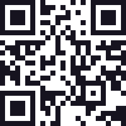

ИИ-кэмп 2026 · защита проекта
Правила, видео и тесты для выездных — в том же приложении, где они получают заказы
02
Исходных замеров нет: до портала прочтение и знание правил не фиксировались нигде — точка отсчёта «0 подтверждённых»
03

Открыть порталvyzovchat.ru/study
04
05
Данные — обзор портала в ВЧ на 17.11, после первых суток работы. Попытки руководства в цифры не входят
06
претензии по поведению и внешнему виду
до − после × цена претензии
время инструктажа перед выездом
× число выездов в декабре
Допущения: претензии берём из Службы контроля в ВЧ, время инструктажа уточняем у реализаторов. Считаем только выездных специалистов
07
Цель: у каждого, кто выходит на выезд в декабре, квалификация подтверждена
08
09
Итоги — к концу декабря, ответственный Никита Зарипов
10
Правила у компании были всегда. Теперь видно, кто их знает, — прямо там, где ставят на выезд
Спасибо!